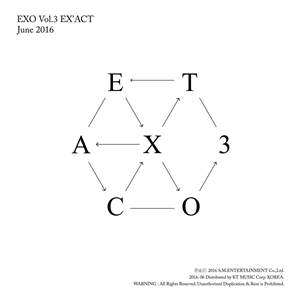
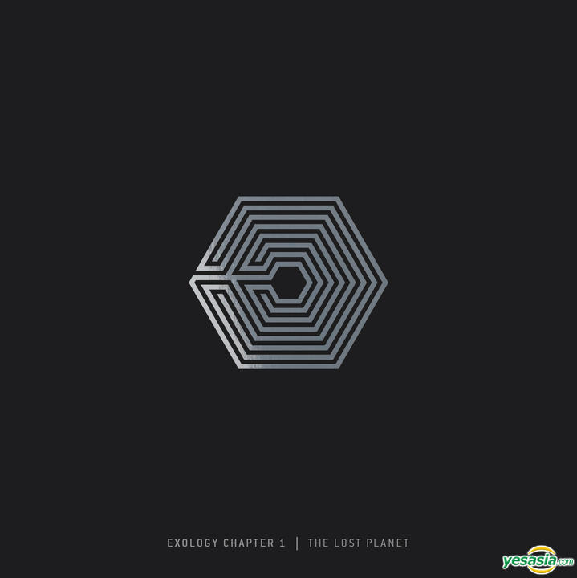

| Album | Details | Songs | |
|---|---|---|---|
|  |
Album: Ex'Act
Released: June, 2016 Genre: K-pop, R&B Language: Korean Label: SM Entertainment Producer: Lee Soo-man |
1. Lucky One
2. Monster 3. Artificial Love 4. Cloud 9 5. Heaven 6. White Noise 7. One And Only 8. They Never Know 9. Stronger 10. Lucky One (Instrumental) 11. Monster (Instrumental) |
 |
 |
Album: Exodus
Released: March, 2015 Genre: K-pop, Dance, R&B Language: Korean Label: SM Entertainment Producer: Lee Soo-man |
1. Call Me Baby
2. Transformer 3. What If... 4. My Answer 5. Exodus 6. El Dorado 7. Playboy 8.Hurt 9. Lady Luck 10. Beautiful |
|
|  |
Album: Exology Chapter 1: The Lost Planet
Released: December, 2014 Genre: K-pop, Dance, Ballad Language: Korean Label: SM Entertainment Producer: Lee Soo-man |
1. "The Lost Planet (Live)" 2. "Haka (Live)" 3. "MAMA (Rearranged) (Live)" 4. "Let Out the Beast (Live)" 5. "I'm Lay (LAY Solo) (Live)" 6. "Moonlight (Live)" 7. "Delight (CHANYEOL Solo)" 8. "Angel (Live)" 3:02 9. "Black Pearl (Rearranged) (Live)" 10. "Up Rising (CHEN Solo) (Live)" 11. "XOXO (Kisses & Hugs) (Live)" 12. "Beat Maker (SEHUN Solo) (Live)" 13. "Love, Love, Love (Rearranged) (Live)" 14. "Thunder (Live)" 15. "Tell Me What Is Love (D.O. Solo) (Live)" 16. "My Lady (Live)" 17. "My Turn To Cry (BAEKHYUN Solo) (Live)" 18. "Baby Don't Cry (Live)" |
|